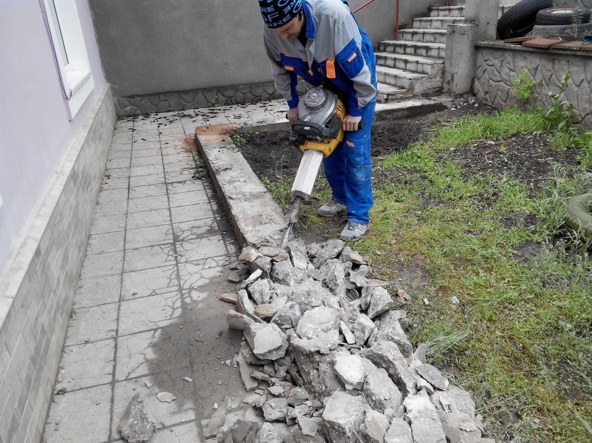

Разнорабочие в Екатеринбурге
Строительство объектов и облагораживание территории не может обойтись без проведения мероприятий, направленных на удаление построек и конструкций с места будущего сооружения.
Демонтажные работы в ЕкатеринбургеОт профессионалов по адекватной цене и с гарантией своевременного их проведения - именно это предлагает компания “РазнорабМСК”
Демонтаж зданий и сооруженийЯвляется одной из оказываемых нами услуг. Надлежащее качество проведенных работ гарантируется - одно из правил компании, которое соблюдается с начала основания. Адекватная цена также обеспечивается “РазнорабМСК”, что актуально для всех категорий заказчиков (физические и юридические лица).
Прайс на демонтажные работыМожно получить у менеджера удобным для заказчика способом. Отметим, что итоговая стоимость данной услугу зависит от сложности услуги и ее особенностей - это нужно принимать к сведению каждому заказчику.
Выполнение демонтажных работОсуществляется согласно требованиям безопасности. Применяются соответствующие инструменты и оборудование, позволяющие сократить время демонтажа объекта. Что получает клиент при обращении к нам К особенностям предложенной услуги нужно отнести:
- Определим количество рабочих для проведения демонтажа после изучения объекта.
- Заказать демонтажные работы можно в удобное время. Такой подход полезен для клиентов, желающих оперативно решить проблему со сносом объекта/конструкции.
- Гарантия 100% выполнения работ. Мы беремся за демонтаж любой сложности, независимо от особенностей поставленной задаче.
- Возможность заказать услугу для любых отдельных элементов постройки - демонтаж стен, пола, перегородок и т.д.
Благодаря этим плюсам, каждый клиент получает возможность оформить бригаду мастеров, способные за минимум времени разобрать любую постройку/объек/конструкцию. Демонтажные работы от “РазнорабМСК” Данная услуга будет полезной для обычного клиента, так и прораба на строительном объекте. Обратившись к нам, можно быть уверенным в быстром и качественном демонтаже любых построек/конструкций. Дополнительно можно заказать вывоз мусора, что позволяет сэкономить время и деньги (не нужно искать отдельного исполнителя этой задачи). Все сотрудники самостоятельно добираются к объекту и полностью автономны - со стороны заказчика не нужно беспокоиться о надобности обедов (еду они берут с собой). Как заказать демонтажные работы. Оплата услуги Клиенту нужно связаться с администратором и обсудить условия оформления услуги. Сделать это можно по телефону или через онлайн-чат. Отметим, что процесс заказа для юридических и физических лиц отличается (подробная информация имеется на главной странице). Оплата демонтажных работ может выполняться наличным или безналичным способом. Доверьтесь нам - строительно-демонтажные работы выполняются на профессиональном уровне, независимо от сложности поставленной задачи.
04.08.2022